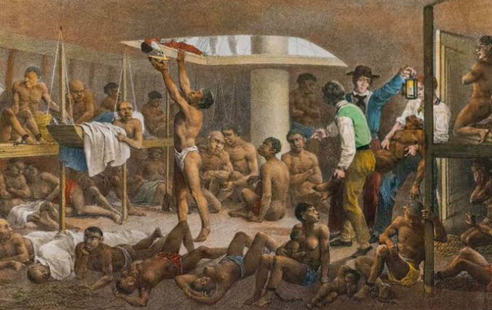

1830
Em 7 de novembro de 1831 que foi promulgada a Lei Feijó, que proibia o tráfico de escravos – uma famosa “lei para inglês ver” essa lei estabelecia multas a quem promovesse o tráfico negreiro, e recompensas em dinheiro a quem denunciasse os importadores, e declarava livres todos os escravos que entrassem no país, exceto os que trabalhassem em embarcações estrangeiras ou chegassem como fugitivos de países onde a escravidão seguisse permitida. Contudo essa lei não obteve sucesso, pois como já diz o nome a lei foi feita mais como uma espécie de satisfação à inglaterra.
